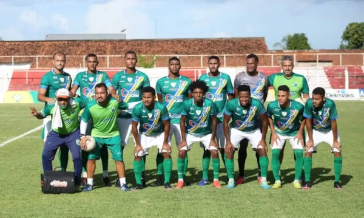
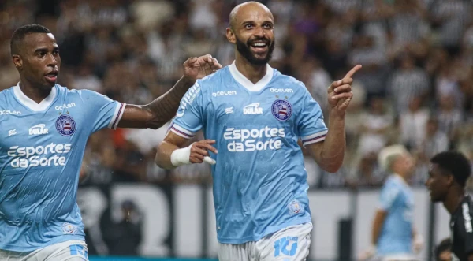
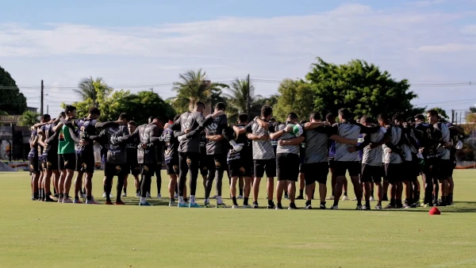
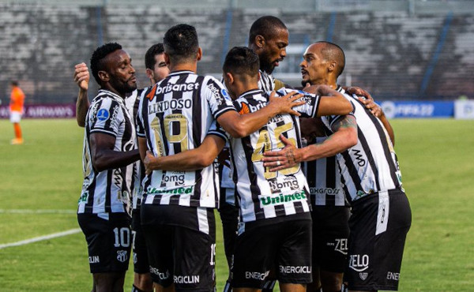
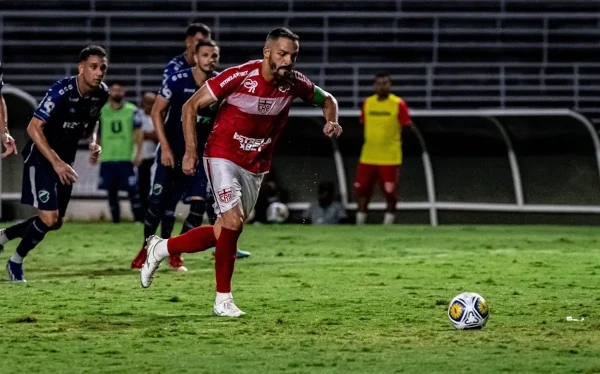
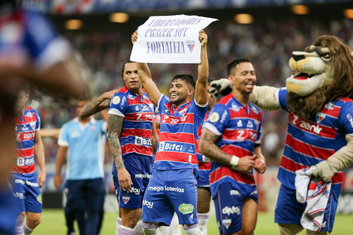
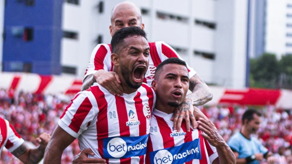
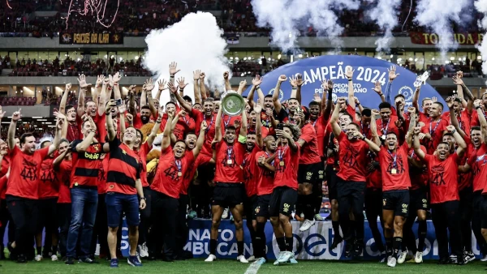

A Copa do Nordeste alcançou um momento emocionante com a chegada das quartas de final, onde a intensidade do futebol nordestino atingiu seu ápice. Com confrontos eletrizantes e equipes determinadas a deixar sua marca, a competição cativou os torcedores com jogadas habilidosas, rivalidades acirradas e momentos de pura emoção. A atmosfera dos estádios foi eletrizante, refletindo a paixão única que os nordestinos têm pelo esporte. Agora, com as quartas de final diante de nós, a expectativa cresce à medida que as equipes se preparam para lutar pelo tão desejado lugar na próxima fase, alimentando o sonho de alcançar a glória na Copa do Nordeste.
Conheça um pouco sobre as equipes que vão disputar o mata-mata:
Altos
O Altos Esporte Clube é uma agremiação esportiva brasileira sediada na cidade de Altos, no estado do Piauí. Fundado em 2013, o clube rapidamente ascendeu no cenário do futebol nordestino. Destacou-se principalmente pela conquista de títulos estaduais e pela sua participação na Copa do Nordeste, competição em que enfrentou adversários de renome nacional. Com uma base sólida e o apoio de sua apaixonada torcida, o Altos continua a trilhar seu caminho rumo a novas conquistas, representando com garra e determinação o futebol do interior nordestino.
Bahia
O Esporte Clube Bahia é um dos clubes de futebol mais tradicionais do Nordeste brasileiro, com sede em Salvador, Bahia. Fundado em 1931, o Bahia possui uma rica história e uma extensa lista de conquistas, incluindo diversos títulos estaduais, regionais e nacionais. O clube possui uma torcida apaixonada e fiel, conhecida como "Nação Tricolor", que comparece em massa aos jogos para apoiar sua equipe. O Bahia também é reconhecido por sua atuação em projetos sociais e pela defesa de causas importantes, como a luta contra o racismo e a discriminação. Com uma trajetória marcada por momentos memoráveis e uma base sólida, o Esquadrão de Aço, como é carinhosamente chamado, continua a representar com orgulho o futebol nordestino em todas as competições em que participa.
Botafogo-PB
O Botafogo Futebol Clube da Paraíba, comumente conhecido como Botafogo-PB, é uma equipe de futebol sediada em João Pessoa, Paraíba. Fundado em 1931, o clube conquistou ao longo de sua história diversos títulos estaduais, consolidando-se como um dos principais representantes do futebol paraibano. O Botafogo-PB também teve participações destacadas em competições nacionais, como a Copa do Brasil e a Série C do Campeonato Brasileiro. Além de seu desempenho esportivo, o clube é reconhecido por sua vibrante torcida e pelo papel de destaque que desempenha na comunidade local, promovendo atividades sociais e culturais. Com uma história rica e uma base de apoio sólida, o Botafogo-PB segue firme em busca de novas conquistas e do fortalecimento do futebol nordestino.
Ceará
O Ceará Sporting Club é um dos clubes mais emblemáticos do futebol nordestino, sediado em Fortaleza, Ceará. Fundado em 1914, o clube possui uma trajetória marcada por conquistas e momentos históricos. Ao longo de sua história, o Ceará conquistou diversos títulos estaduais e teve participações destacadas em competições nacionais, como a Copa do Brasil e o Campeonato Brasileiro. Além de seu desempenho esportivo, o clube é reconhecido pela sua vibrante torcida, conhecida como "Alvinegra", que apoia incondicionalmente a equipe em todos os momentos. O Ceará também se destaca por sua atuação em projetos sociais e comunitários, promovendo a inclusão e o desenvolvimento por meio do esporte. Com uma história rica e uma base sólida, o Ceará continua a representar com orgulho o futebol cearense e nordestino em geral.
CRB
O Clube de Regatas Brasil, conhecido como CRB, é um dos clubes mais tradicionais do estado de Alagoas e do Nordeste brasileiro. Fundado em 1912, o CRB possui uma história rica e repleta de conquistas, destacando-se principalmente nos campeonatos estaduais. O clube também teve participações relevantes em competições nacionais, como a Copa do Brasil e a Série B do Campeonato Brasileiro. Com uma base de torcedores fervorosos, o CRB tem uma presença marcante no cenário esportivo local e regional, sendo uma verdadeira paixão para os alagoanos. Além do futebol, o clube também se dedica a projetos sociais e comunitários, buscando contribuir para o desenvolvimento da região. Assim, o CRB continua a escrever sua história de glórias e a representar com orgulho o futebol nordestino.
Fortaleza
O Fortaleza Esporte Clube é uma das equipes mais emblemáticas e vitoriosas do futebol nordestino. Fundado em 1918, o clube tem uma história repleta de conquistas, tanto a nível estadual quanto nacional. Com uma base de torcedores fervorosos, conhecidos como "tricolores", o Fortaleza possui uma presença marcante no cenário esportivo do Brasil. O clube conquistou diversos títulos estaduais ao longo dos anos e também teve participações destacadas em competições nacionais, como a Copa do Brasil e o Campeonato Brasileiro. Além de seu sucesso esportivo, o Fortaleza é reconhecido por sua forte atuação em projetos sociais, utilizando o esporte como ferramenta de inclusão e transformação na comunidade. Com uma gestão profissionalizada e uma equipe competitiva, o Fortaleza continua a representar com orgulho o futebol cearense e nordestino, buscando sempre novas conquistas e glórias para seus torcedores.
Náutico
O Clube Náutico Capibaribe, popularmente conhecido como Náutico, é uma das agremiações esportivas mais tradicionais e queridas do Nordeste brasileiro. Fundado em 1901, na cidade do Recife, Pernambuco, o clube possui uma história rica e repleta de conquistas. Ao longo dos anos, o Náutico conquistou diversos títulos estaduais, além de participações importantes em competições nacionais, como a Copa do Brasil e o Campeonato Brasileiro. O clube tem uma torcida apaixonada, conhecida como "Alvirrubra", que apoia a equipe em todas as circunstâncias, fazendo do estádio dos Aflitos um verdadeiro caldeirão. Além do sucesso esportivo, o Náutico também se destaca por seu compromisso com projetos sociais e comunitários, contribuindo para o desenvolvimento da região. Com uma gestão profissionalizada e uma base sólida, o Náutico continua a representar com orgulho o futebol pernambucano e nordestino, buscando sempre novas conquistas e glórias para seus torcedores.
Sport
O Sport Club do Recife, mais conhecido como Sport, é um dos clubes mais emblemáticos e vitoriosos do Nordeste brasileiro. Fundado em 1905, o Sport possui uma história repleta de conquistas, tanto a nível estadual quanto nacional. Com uma torcida apaixonada, conhecida como "Rubro-negra", o Sport tem uma presença marcante no cenário esportivo do Brasil. O clube conquistou diversos títulos estaduais ao longo dos anos e também teve participações destacadas em competições nacionais, como a Copa do Brasil e o Campeonato Brasileiro. Além do sucesso esportivo, o Sport é reconhecido por seu compromisso com projetos sociais e comunitários, utilizando o esporte como ferramenta de inclusão e transformação na comunidade. Com uma gestão profissionalizada e uma base sólida, o Sport continua a representar com orgulho o futebol pernambucano e nordestino, buscando sempre novas conquistas e glórias para seus torcedores.
Veja os confrontos:
- CRB x Botafogo-PB - 09/04 às 20:00
- Bahia x Náutico - 10/04 às 21:30
- Sport x Ceará - 10/04 às 21:30
- Fortaleza x Altos - 20/04 às 19:30